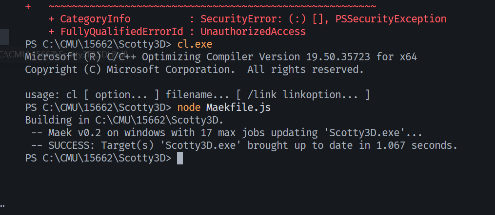

**Assignment 0 Report**
AndrewID: peiranx
(##) About this template
* You can view your writeup by opening it in a browser - right click this file and open with your browser of choice.
* Replace reference images with your own screenshots or renders when applicable.
* Include descriptions of any encountered problems and the time you spent on each task.
(##) A0T1
Step 1: Clone
or
Step 2: General Setup
Visual Studio:
Node:

Nest-libs:
Step 3: Build and Run
(##) A0T2
Your completion of this task will be graded based on your `test.a0.task2.problems.cpp` file and your responses to the below questions.
For each of the problems you solved in task 2, characterise the bug in your own words and explain one other scenario that may cause this
type of bug.
Problem 1:
String is supposed to be Std::string instead. Cout was written as "Cour". A semi-colon is missing on the line of the print statement.
These typos could be easily reproduced in any scenario.
Problem 2:
The lambda function should perform a floating point division but it does integer division, so some precision is lost by mistake.
It can also happen in floating point multiplication.
Problem 3:
end() of a std::vector does not point to an actual element. The last element (which the problem tries to fetch) is located at one iteration before the end().
It could also happen when someone tries to traverse a vector and treats end() as actual element and do operations on this "element".
Problem 4:
The if statement contains a three-way comparison which is written incorrectly.
Another scenario is ((a > b) > c) which equals to (true or false) > c which is not what we wanted.
(##) A0T3
You do not need any screenshots for this task. Your completion will be graded based on your `src` submission.
(##) GenAI Use
Which model(s) did you use (e.g., ChatGPT-4, Claude-2, etc.)?
I used deepseek.
For what purpose(s) did you use GenAI (e.g., brainstorming, code generation, debugging, etc.)?
I wanted it to help me understand the concept of half edges, vertices, etc.
What was it good at? What was it bad at?
It is good at explaining concepts in an intuitive manner. But it is not as good at trying to diagnose the errors in the code.
(##) Feedback
Use this section to provide feedback about the assignment.